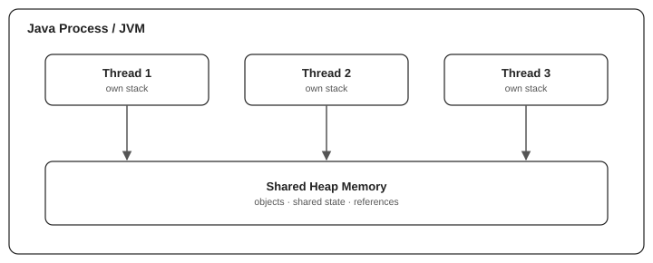
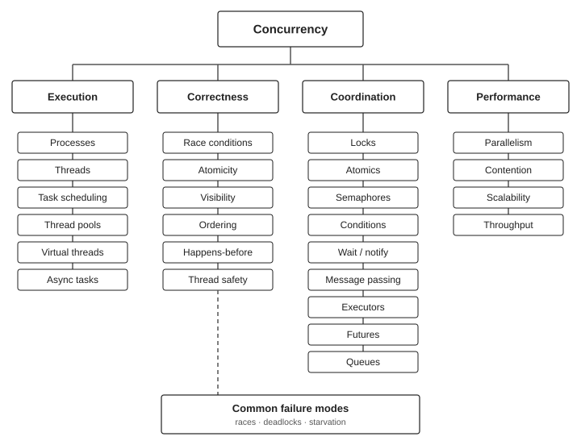
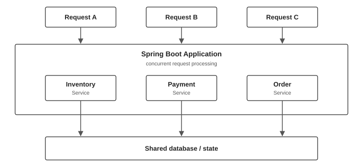

Concurrency and multithreading are fundamental concepts in software development that allow applications to manage multiple tasks efficiently, improve responsiveness, and utilize system resources effectively.
They are especially important in Java backend development, Spring Boot applications, databases, and distributed systems.
Concurrency is the ability of a system to make progress on multiple tasks during overlapping periods of time. The tasks may execute by taking turns on a single CPU core or simultaneously on multiple CPU cores.
These tasks may not execute at exactly the same instant. Instead, the CPU can switch between them, allowing each task to make progress.

Only one task executes at a given instant, but all three make progress.
For example, consider a Spring Boot application handling three requests:
- Request A: Fetch customer details.
- Request B: Process a payment.
- Request C: Generate an invoice.
Instead of completing A, then B, then C, the application can make progress on all three requests concurrently. In the same way, a web server can handle requests from multiple clients concurrently while some requests wait for database results.
Parallelism means executing multiple tasks simultaneously, typically on different CPU cores.
Three tasks execute at the same time on three CPU cores.
Concurrency vs parallelism
| Concurrency | Parallelism |
|---|---|
| Multiple tasks make progress over overlapping time intervals | Multiple tasks execute at the same instant |
| Possible on a single CPU core | Requires multiple execution resources for CPU tasks |
| Focuses on managing and coordinating tasks | Focuses on simultaneous execution and throughput |
| Useful for responsiveness and overlapping waits | Useful for CPU-intensive workloads |
| Example: Web server managing requests | Example: Image processing on multiple cores |
Key point: Parallelism is one way to achieve concurrency, but concurrency does not require parallelism.
Important: An application can be concurrent without being parallel, parallel without using multiple application threads (such as GPU computing), or both.
Multithreading is a programming technique where multiple threads execute within a single process.
A thread is an independent path of execution within a process.
Threads belonging to the same process generally share heap memory and process resources, while each thread has its own execution stack and program counter.

Calling start() schedules threads for execution. Calling run() directly would simply execute the method on the current thread.
The exact order in which the threads execute is not guaranteed.
Concurrency is a broad area containing several interrelated concepts: how work is executed, how correctness is preserved, how tasks coordinate, and how the system performs.

A. Execution models
| Concept | Meaning |
|---|---|
| Process | An executing program with its own virtual address space |
| Thread | An execution path within a process; threads can share process memory |
| Multithreading | Using multiple threads within a single process |
| Context switching | CPU switching execution between threads or processes |
| Scheduling | Deciding which task or thread gets CPU time |
| Thread pool | A reusable collection of worker threads |
| Asynchronous execution | Starting an operation without having to wait synchronously for its completion |
| Virtual threads | Lightweight Java threads, useful for scaling blocking I/O workloads |
B. Thread lifecycle and states
Java threads have six official states:
| State | Meaning |
|---|---|
NEW | Thread created but not started |
RUNNABLE | Eligible to run or currently running |
BLOCKED | Waiting to acquire an intrinsic monitor lock |
WAITING | Waiting indefinitely for another action |
TIMED_WAITING | Waiting for a specified time |
TERMINATED | Thread execution completed |
Java does not define a separate RUNNING state in Thread.State; running is included in RUNNABLE.
C. Thread scheduling and context switching
The scheduler determines which runnable threads receive CPU time.
Context switching occurs when the system switches execution from one thread to another. It has overhead due to scheduling work and CPU state changes.
Related concepts include thread priorities, preemption, CPU time slices, and thread starvation.
D. Shared state and race conditions
When multiple threads access the same mutable data, coordination may be necessary.
A race condition occurs when program behavior depends on the relative timing or ordering of concurrent operations.
count++ involves reading, modifying, and writing a value. Two threads may read the same old value and overwrite each other’s updates.
Consider two threads incrementing counter, initially zero:
| Thread A | Thread B |
|---|---|
| 1. Read counter = 0 | |
| 2. Read counter = 0 | |
| 3. Calculate 0 + 1 | |
| 4. Calculate 0 + 1 | |
| 5. Write counter = 1 | |
| 6. Write counter = 1 |
Expected result: 2. Actual result: 1.
This is a lost update, a common concurrency bug.
E. Critical section
A critical section is a region of code that accesses shared mutable state and must be protected from unsafe concurrent access.
The synchronized keyword provides mutual exclusion and memory-visibility guarantees when threads use the same monitor correctly.
F. Atomicity, visibility, and ordering
These are the three fundamental correctness properties of concurrent programs.
| Property | Description | Java mechanisms |
|---|---|---|
| Atomicity | An operation occurs indivisibly with respect to competing threads | synchronized, Lock, atomic classes |
| Visibility | Changes made by one thread become visible to other threads | volatile, synchronization, atomics |
| Ordering | Operations are observed according to required ordering constraints | Java Memory Model, happens-before |
Important distinction: volatile provides visibility and ordering guarantees but does not make compound operations such as count++ atomic.
For atomic counters, Java provides AtomicInteger, AtomicLong, and LongAdder.
G. Java Memory Model (JMM)
The Java Memory Model (JMM) defines how threads interact through memory, including the happens-before relationships that establish visibility and ordering guarantees.
Important ideas include the happens-before relationship, safe publication, visibility, synchronization actions, volatile, and the semantics of final fields.
Without appropriate synchronization, one thread is not necessarily guaranteed to observe another thread’s latest writes.
H. Synchronization mechanisms
Synchronization coordinates concurrent access to shared resources. Common mechanisms, with their Java forms:
| Mechanism | Purpose |
|---|---|
| Mutex / Lock | Protect access to a critical section |
synchronized | Java intrinsic monitor-based locking and memory synchronization |
ReentrantLock | Explicit, reentrant mutual exclusion with advanced capabilities |
ReadWriteLock | Separate read and write locking: concurrent readers, exclusive writer |
StampedLock | Supports read, write, and optimistic read modes |
Semaphore | Limits concurrent access to a resource through permits |
| Atomic variables | Lock-free atomic operations for individual values |
| Condition variables | Allow threads to wait for specific conditions |
CountDownLatch | Waits for a specified number of events |
CyclicBarrier | Synchronizes a fixed group of threads at a common execution point |
Phaser | Coordinates multiple synchronization phases |
| Blocking queue | Safely transfers data between producer and consumer threads |
I. Thread communication
Threads sometimes need to wait for data or coordinate actions.
Common mechanisms include wait(), notify(), notifyAll(), Condition, BlockingQueue, and CompletableFuture.
For example, a producer thread can put tasks into a BlockingQueue, while consumer threads take tasks from it.
J. Common concurrency problems
| Problem | Explanation |
|---|---|
| Race condition | Execution timing changes the result |
| Data race | Conflicting unsynchronized memory accesses without a happens-before relationship |
| Deadlock | Threads remain blocked waiting for resources held by one another |
| Livelock | Threads remain active but cannot make useful progress |
| Starvation | A thread is repeatedly denied the resources or execution opportunities it needs |
| Priority inversion | High-priority work is delayed by lower-priority work |
| Contention | Multiple threads compete for a resource or lock |
| False sharing | Independent frequently updated variables occupy the same cache line, degrading performance |
Consistent lock ordering, timeouts, reducing lock scope, and appropriate synchronization policies help prevent these problems.
K. Thread pools and executors
Creating a new platform thread for every task can be expensive. Thread pools allow worker threads to be reused.
The Executor framework includes ExecutorService, ThreadPoolExecutor, ScheduledExecutorService, and Future.
L. Virtual threads
Java 21 introduced virtual threads as a permanent feature.
Virtual threads are lightweight Java threads managed by the JVM. They are especially valuable for applications handling large numbers of concurrent blocking I/O operations.
Virtual threads improve scalability for suitable workloads, but they do not automatically make CPU-intensive operations faster or eliminate race conditions.
M. Asynchronous programming
Asynchronous programming allows a caller to initiate an operation without necessarily waiting for it to complete before doing other work.
In Java, CompletableFuture provides APIs for asynchronous computation and task composition.
Asynchronous programming and multithreading are related, but they are not identical.
N. Concurrency design approaches
- Shared-memory concurrency: Multiple threads operate on shared data, coordinated through locks or atomics.
- Message passing: Tasks communicate by sending messages rather than directly modifying shared state.
- Thread confinement: Mutable state is restricted to a single thread.
- Immutability: Data cannot be modified after creation, reducing synchronization requirements.
- Optimistic concurrency: Proceed assuming conflicts are infrequent; detect conflicts and retry or reject.
- Pessimistic concurrency: Acquire exclusive or controlled access before changing shared state.
- Structured concurrency: Organize related concurrent tasks into bounded lifetimes with coordinated completion and cancellation.
Once the fundamentals are understood, the following concepts become important in production applications.
| Concept | Purpose |
|---|---|
| Thread safety | Ensuring correctness under concurrent access |
| Immutability | Avoiding shared-state modification |
| Thread confinement | Keeping mutable data owned by one thread |
| ThreadLocal | Providing thread-associated data |
| Lock-free algorithms | Coordinating operations without conventional mutual exclusion |
| Compare-and-swap (CAS) | Atomic conditional updates |
| Concurrent collections | Thread-safe data structures such as ConcurrentHashMap |
| Fork/Join framework | Recursive parallel task execution and work stealing |
| Backpressure | Preventing producers from overwhelming consumers |
| Cancellation and interruption | Stopping or signaling ongoing tasks |
| Structured concurrency | Managing related concurrent tasks as a unit |
| False sharing | CPU cache contention involving separate variables |
| Amdahl’s Law | Understanding theoretical parallel speedup limits |
| Linearizability | A correctness model for concurrent operations |
Consider an order processing system:

Concurrency considerations include:
- Multiple users purchasing the final available unit of a product.
- Preventing double deduction of the same payment.
- Coordinating inventory updates across application instances.
- Handling simultaneous writes to the same database record.
- Managing thread-pool exhaustion and connection-pool contention.
For example, a Java synchronized block coordinates threads inside one JVM, but does not coordinate multiple Spring Boot instances. Distributed concurrency requires solutions such as database constraints, row locks, optimistic versioning, or carefully designed distributed coordination.
Web request processing
Multiple requests can be processed concurrently using servlet container threads or other execution models. Shared Spring singleton services must be designed with thread safety in mind.
Concurrent database updates
Transaction isolation, optimistic locking, pessimistic locking, and database constraints help coordinate concurrent access to records.
Background processing
Spring @Async, task executors, scheduled jobs, and message consumers can execute independent workloads concurrently.
Parallel service calls
CompletableFuture can help issue independent API calls concurrently and combine their results, reducing total waiting time when execution resources permit.
| Concepts | Difference |
|---|---|
| Concurrency vs. parallelism | Overlapping progress vs. simultaneous execution |
| Synchronous vs. asynchronous | Waiting for completion vs. decoupled completion |
| Blocking vs. non-blocking | Waiting may suspend a thread vs. operations that do not require the caller to wait |
| Thread safety vs. reentrancy | Safe under concurrent access vs. safe to enter again before a prior invocation completes |
| Lock-free vs. wait-free | System-wide progress guarantee vs. per-operation progress guarantee |
| CPU-bound vs. I/O-bound | Computation-limited vs. waiting-on-I/O-limited |
| Local vs. distributed concurrency | Coordination within a process vs. across processes or machines |
- Fundamentals: Processes vs threads, concurrency vs parallelism, scheduling, context switching, thread lifecycle.
- Thread safety and the Java Memory Model: Shared memory, race conditions, critical sections, atomicity, visibility, ordering, happens-before,
volatile. - Synchronization:
synchronized, intrinsic monitors,ReentrantLock, read-write locks, conditions, semaphores, latches, barriers, thread communication. - Java concurrency utilities:
ExecutorService, thread pools,Future,CompletableFuture, atomics,ConcurrentHashMap,BlockingQueue,CountDownLatch,Semaphore. - Advanced concurrency: CAS, lock-free algorithms, Fork/Join, virtual threads, thread-pool tuning, structured concurrency, performance tuning.
- Database, distributed and real-world concurrency: Transactions, isolation levels, optimistic/pessimistic locking, lost updates, distributed locks, idempotency and concurrent API requests, Spring Boot request handling, asynchronous processing, Kafka consumers.
The most important idea: Concurrency is not just about executing more work at once. It is about ensuring that independently progressing tasks produce correct results, use resources efficiently, and do not interfere with one another.
Concurrency is about coordinating multiple tasks that can progress during overlapping periods. Multithreading is one mechanism for achieving concurrency, while parallelism is about executing work simultaneously. The most important challenge is not merely running multiple threads—it is ensuring correctness, thread safety, predictable progress, and efficient resource usage under concurrent execution.
For a Java/Spring Boot backend engineer, the foundational topics to master first are race conditions, synchronization, the Java Memory Model, thread pools, atomic operations, and database concurrency control.